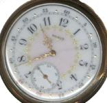

Victory! Accurate times!
The dates and times in the Roller version of my blog are accurate! Except that I cheated: the dates are actually in the body of the entry that BlogEd publishes to Roller - I whacked my blog template to get rid of the dates that come from Roller. The only way this cheat is visible is in the calendar on the side: if you click on dates you see the dates that Roller understands, rather than the accurate dates.The problem ended up being with the metaweblog API and its realization in Roller: while Roller allows the publication date to be set manually through a web page, there's no access to that through metaweblog. Which leads to all the thrashing about other blog APIs, like Atom. I'm so looking forward to something that works...
| June 20, 2005 |